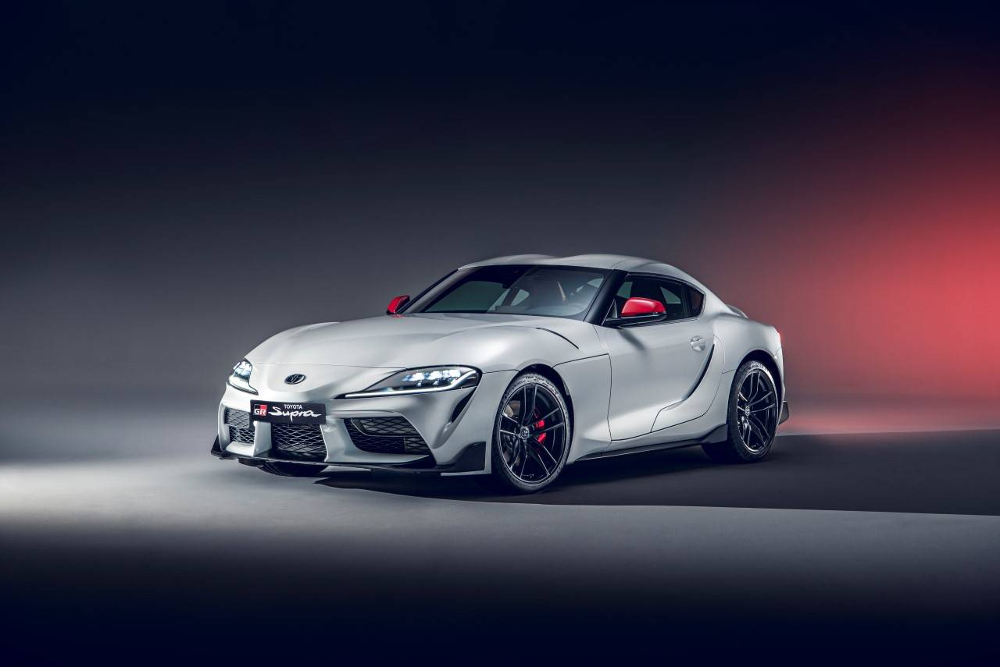
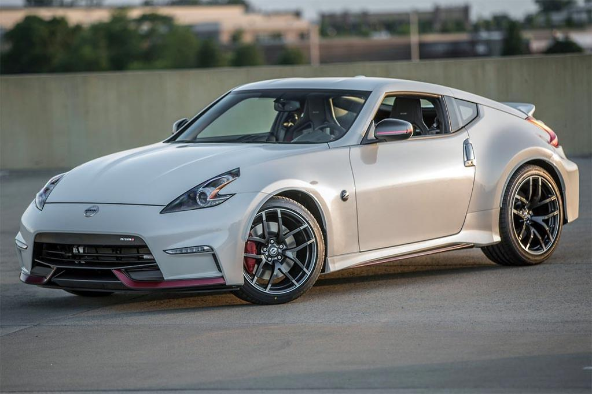
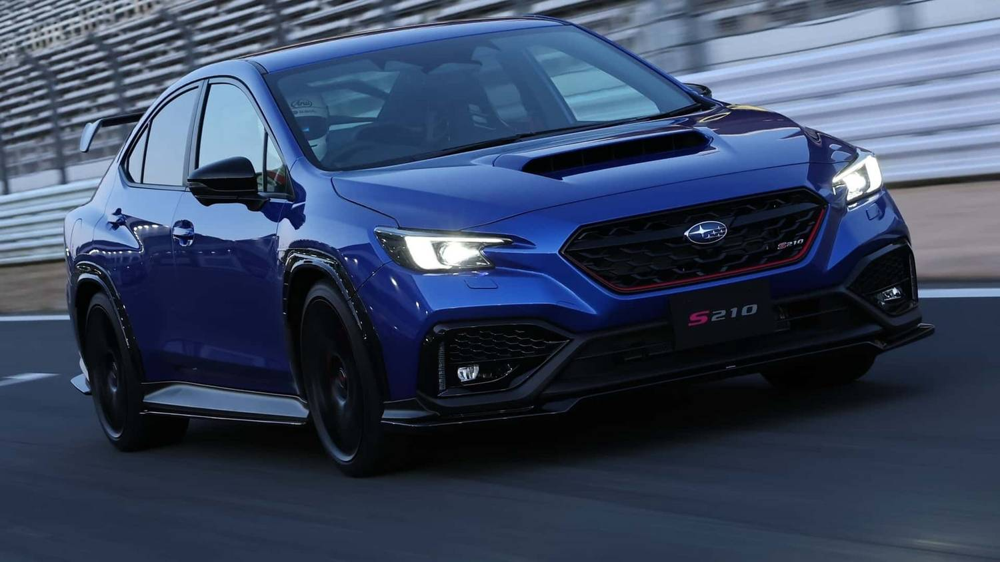
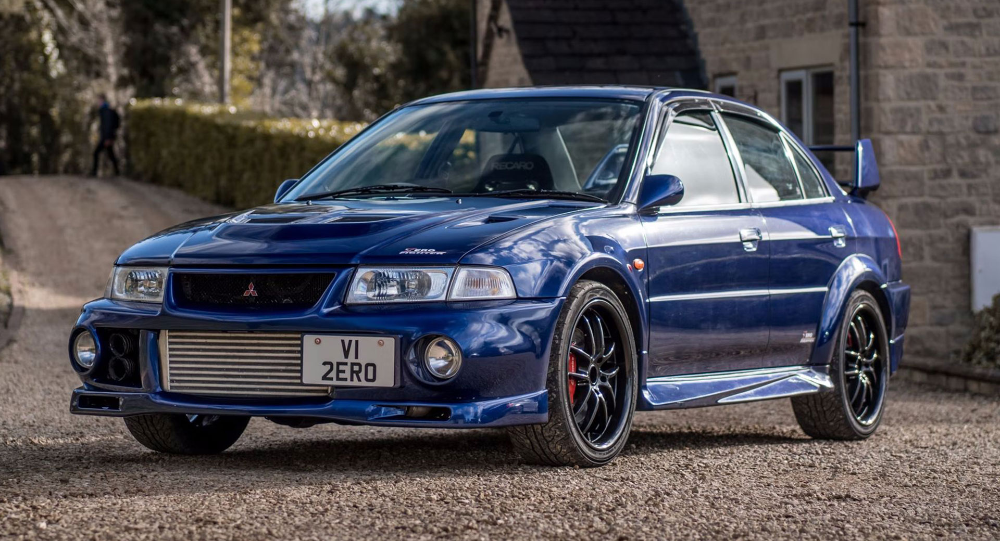
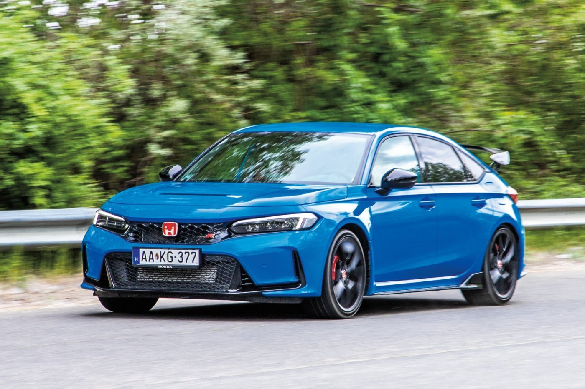

Toyota

A Toyota továbbra is az egyik legnagyobb autógyártó, de a sportos vonal (pl. Supra) inkább marketing lett. Egyre több elektromos és hibrid modell kerül előtérbe.
Nissan

A Nissan a Z széria után eléggé visszafogta a sportos modelleket. Az új Z érdekes próbálkozás, de nem az igazi. Sok modell inkább az amerikai és SUV piacra fókuszál.
Subaru

A Subaru WRX STI már nem készül. Az új WRX már csak CVT automatával érhető el sok helyen, és sok rajongót elidegenített ezzel az iránnyal.
Mitsubishi

A Mitsubishi szinte teljesen kiszállt a sportautó piacról. Az Evo sorozat véget ért, jelenleg főként SUV-okat és hibrid modelleket gyárt.
Honda

A Honda még mindig próbálja életben tartani a sportos vonalat a Civic Type R-rel, de a régi VTEC-es élmény már nem a régi. Elektromosítás itt is egyre fontosabb.